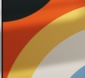

De olhar para
uma coisa e ver
outra

Este autoral caminha pela criatividade, adotando
uma abordagem não linear que busca conexões
múltiplas e descentralizadas…. Utilizando vídeos, fotos,
poesias e fragmentos, aqui tudo transcende o óbvio e
oferece uma experiência única, explorando os sentidos
humanos. Sem uma estrutura rígida, permite que
experiências pessoais e emoções se entrelacem de forma
fluida.
Cada ato é um nó em uma rede complexa de
significados, onde as fotos e vídeos servem como pontos
de conexão